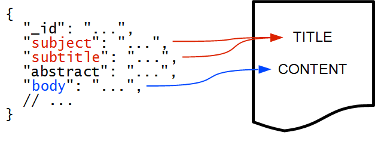

The clustering plugin attempts to automatically group together similar "documents" and assign human-readable labels to these groups. The clusters can be thought-of as "dynamic facets" generated for each unique query and set of search result hits. Take a look at the Carrot2 demo page to see how this can be used in practice.
Each document passed for clustering is composed of several logical parts: the document's identifier, title, main content and language code (only the identifier field is mandatory, everything else is optional). Either the title, main content or both should be provided to make the clustering process reasonable, otherwise there will be no input for the algorithm to work on.
Read this section first, it contains important information about clustering which will help understand what's going on behind the scenes.
Documents indexed in Elasticsearch do not have to follow any predefined schema, so sections of the input JSON document need to be mapped to the logical layout required by the clustering plugin. An example mapping can look as illustrated in the figure below:

Two document fields are mapped to the title. This is not an error: any number of fields can be mapped to either the title or the content—values of those fields will be concatenated and used for clustering.
Another way to provide the title and content fields is to use the highlighter. This can be useful to decrease the amount of text passed to the clustering algorithm (improves performance) or to make the content of documents passed for clustering more focused on the query (because highlights typically provide the context of query terms).
The REST API examples below demonstrate the API for field mapping in details.
The Java API for clustering search results implements all the backend functionality behind all REST requests described in the following parts of this document. For actual code utilizing the API see the source code of the plugin at github, especially the unit and integration tests.
The HTTP REST API contains several methods closely reflecting the Java-side API's functionality. Each of these methods is described in detail below.
/_algorithms (GET or POST)This action lists all available clustering algorithms. The returned identifiers can be used as a parameter to the clustering request.
A request to list the available algorithms is a simple GET or POST request to
/_algorithms URL.
The response is a JSON object with an algorithms property which is a non-empty
array of algorithm identifiers. The following example shows the algorithms available
on this plugin instance. The default algorithm is the first one on the list.
$.get(window.ES_URL + "/_algorithms", function(response) {
$("#list-of-algorithms").text(
JSON.stringify(response, null, " "));
});
/_search_with_clusters (POST, GET)/{index}/_search_with_clusters (POST, GET)/{index}/{type}/_search_with_clusters (POST, GET)This action performs a search query, fetches matching hits and clusters them on-the-fly.
The index and type URI segments implicitly bind the search request part of the
message to a given index and document type, exactly as in the
search request API.
A clustering request is a HTTP REST request, where the full set of parameters is supported via HTTP POST request with a JSON body. A limited subset of clustering functionality is also exposed via the HTTP GET method (and URL parameters).
A HTTP POST request should contain a JSON object with the following properties.
search_requestrequired The search request to fetch documents to be clustered. This section follows exactly what the search DSL specifies, including all optional bells and whistles such as sorting, filtering, query DSL, highlighter, etc.
query_hintrequired This attribute specifies query terms used to fetch the matching documents. This hint helps the clustering algorithm avoid trivial clusters that would be created around those frequent query terms. Typically the value of this parameter is identical to what the user typed in the search box. If possible, it should be pruned from any boolean or search-engine specific operators which could affect the clustering process. The query hint is obligatory but may be an empty string.
field_mappingrequired
Defines how to map actual fields of the documents matching the search_request to
logical fields of the documents to be clustered. The value should be an object where keys indicate logical
document fields and values are arrays with field source specifications (content of fields
defined by these specifications is concatenated). For example this is a valid field mapping specification:
{
"title": [_source.subject],
"content": [_source.abstract, highlight.main],
"language": [_source.lang]
}
Any of the following logical document field names are valid:
titleThe title of the document.
contentThe main body (content) of the document.
languageOptional language name for the title and content of a document. The language must be
consistent with language components installed and available in Carrot2. The
list of supported languages is logged at startup. Note that unsupported languages will
default to the main language of the request (language request parameter).
The field source specification defines where the value is taken from: the search hit's fields, stored document's content, or from the highlighter's output. The syntax of field source specification is as follows:
_source.{fieldname}highlight.{fieldname}fields.{fieldname}_source syntax.
algorithmoptional Defines which clustering algorithm should be used for clustering. Names of all built-in clustering algorithms are logged at startup and are also returned from the list algorithms request. The default algorithm is used, if value is empty or not provided.
max_hitsoptional
If set to a non-negative number, the clustering response will be limited to
contain only a maximum of the given search hits. The clustering will still run
on a full window of results returned by the original search request. This option
may be useful to decrease the size of clustering response; in an extreme case of
max_hits equal o 0, only clusters are returned
and they can be used as facets (for refining the query, but without the immediate
link to the search hits).
Note that clusters may still reference documents not present in the returned (trimmed) hits window.
create_ungroupedoptional
If set to true, the documents not assigned to any cluster will form a synthetic
group appended at the end of all clusters. This is effectively the "other topics" group
created by Carrot2 versions prior to 4.0.
languageoptional
Declares the default language for documents where field mapping for the logical
language field is not declared (or empty). The default value of this field
is English.
attributesoptional A JSON object with attributes overriding the default algorithm settings (per-query or runtime attributes in Carrot2 parlance).
Very important
Clustering requires at least a few dozen documents (hits) in order to make
sense. The clustering plugin clusters search results only (it does not look in the index, it does not
fetch additional documents). Make sure to specify the size of the
fetch window to be at least 100 documents. If your application does not need so many hits
(document references), the response size can be trimmed by using max_hits parameter on
the clustering request.
A HTTP GET clustering request supports a superset of HTTP URI parameters defined by Elasticsearch's URI search request. All additional parameters correspond to those typically defined in the body of a clustering request sent via HTTP POST. Namely, the following parameters are supported by HTTP GET:
field_mapping_*required
This is a wildcard (a family) of parameters, each of which defines a logical field mapping, similar
to field_mapping map described in the HTTP POST request. A field_mapping_title
will specify the logical title's mapping, wheareas field_mapping_content will specify
the logical document content mapping.
The value of the mapping parameter is a comma-separated list of mapping specifications, as described in the description of the POST request.
algorithmoptional
Identical semantics to algorithm attribute described in HTTP POST request.
query_hintoptional
Identical semantics to query_hint attribute described in HTTP POST request.
For GET requests the query hint is optional; if not present, the q attribute is used
as the default.
create_ungroupedoptional
If set to true, the documents not assigned to any cluster will form a synthetic
group appended at the end of all clusters. This is effectively the "other topics" group
created by Carrot2 versions prior to 4.0.
languageoptional
Declares the default language for documents where field mapping for the logical
language field is not declared (or empty). The default value of this field
is English.
Important
A HTTP GET request offers a subset of the functionality of a full HTTP POST JSON syntax. For example, it is not possible to specify a field mapping to highlighted field values, define custom algorithm attributes, etc. HTTP POST is recommended for production.
An example HTTP GET clustering request is shown below, with the resulting clusters shown on the right-hand side panel.
var getUrl = window.ES_URL + "/test/test/_search_with_clusters?"
+ "q=data+mining&"
+ "size=100&"
+ "field_mapping_title=_source.title&"
+ "field_mapping_content=_source.content";
// Run HTTP GET via jquery and render cluster labels.
$.get(getUrl,
function(response) {
$("#cluster-httpget-result").text(
dumpClusters([], response.clusters).join("\n"));
});
The response format is identical to a plain search request response, with extra properties presented in the schematic output below.
{
/* Typical search response fields. */
"hits": { /* ... */ },
/* Clustering response fields. */
"clusters": [
/* Each cluster is defined by the following. */
{
"id": /* identifier */,
"score": /* numeric score */,
"label": /* primary cluster label */,
"other_topics": /* if present, and true, this cluster groups
unrelated documents (no related topics) */,
"phrases": [
/* cluster label array, will include primary. */
],
"documents": [
/* This cluster's document ID references.
May be undefined if this cluster holds sub-clusters only. */
],
"clusters": [
/* This cluster's subclusters (recursive objects of the same
structure). May be undefined if this cluster holds documents only. */
],
},
/* ...more clusters */
],
"info": {
/* Additional information about the clustering: execution times,
the algorithm used, etc. */
}
}
Given the following function that recursively dumps clusters:
window.dumpClusters = function(arr, clusters, indent) {
indent = indent ? indent : "";
clusters.forEach(function(cluster) {
arr.push(
indent + cluster.label
+ (cluster.documents ? " [" + cluster.documents.length + " documents]" : "")
+ (cluster.clusters ? " [" + cluster.clusters.length + " subclusters]" : ""));
if (cluster.clusters) {
dumpClusters(arr, cluster.clusters, indent + " ");
}
});
return arr;
}
We can dump all cluster labels of a clustering request with the following snippet of javascript:
var request = {
"search_request": {
"query": {"match" : { "content": "data mining" }},
"size": 100
},
"max_hits": 0,
"query_hint": "data mining",
"field_mapping": {
"title": ["_source.title"],
"content": ["_source.content"]
}
};
$.post(window.ES_URL + "/test/test/_search_with_clusters",
JSON.stringify(request),
function(response) {
$("#cluster-list-result").text(
dumpClusters([], response.clusters).join("\n"));
});
The output will vary depending on the choice of clustering algorithm
(and particular documents that made it to the hit list if search is not
deterministic). The following example shows the same result as above
but uses the STC algorithm. We don't need every search hit here
so we will omit them in the response.
var request = {
"search_request": {
"query": {"match" : { "content": "data mining" }},
"size": 100
},
"max_hits": 0,
"query_hint": "data mining",
"field_mapping": {
"title": ["_source.title"],
"content": ["_source.content"]
},
"algorithm": "STC"
};
$.post(window.ES_URL + "/test/test/_search_with_clusters",
JSON.stringify(request), function(response) {
$("#cluster-list-result2").text(
dumpClusters([], response.clusters).join("\n"));
});
A full response for a clustering request can look as shown below (note the difference in field mapping in this example).
var request = {
"search_request": {
"_source": [ "title", "content" ],
"query": {"match" : { "content": "data mining" }},
"size": 100
},
"max_hits": 0,
"query_hint": "data mining",
"field_mapping": {
"title": ["_source.title"],
"content": ["_source.content"]
}
};
$.post(window.ES_URL + "/test/test/_search_with_clusters",
JSON.stringify(request),
function(response) {
$("#simple-request-result").text(
JSON.stringify(response, false, " "));
});
The field mapping section provides a connection between actual data and logical data
to cluster on. The different field mapping sources
(_source.*,
highlight.* and
fields.*) can be used to tune the amount of data returned in the request and
the amount of text passed to the clustering engine (and in result the required processing cost).
The _source.* mapping takes data directly from the source document, if _source
is available as part of the search hit. The content pointed to by this mapping is not returned as
part of the request, it is only used internally for clustering.
Important!
Partial _source can be configured using
search request filtering attributes.
The fields.* mapping requires stored fields in the schema. It is superseded by
_source.* filtering since ES 5.x release.
The highlight.* mapping also must be accompanied by appropriate
highlight
declaration in the search request. The highlighting request specification can be used to tune the
amount of content passed to the clustering engine (the number of fragments, their width, boundary, etc.). This
is of particular importance when the documents are long (full content is stored): it is typical that
clustering algorithms run perceptually "better" when focused on the context surrounding
the query, rather than when presented with full content of all documents.
Any highlighted content will also be returned as part of the request.
Compare the clustering output for the following two requests. One is clustering on full
content of the content fields, the other just on highlighted snippets
around the mining term from the query (highlights come from the
same content field).
var request = {
"search_request": {
"_source": ["url", "title", "content"],
"query": {
"query_string" : {
"default_field": "content",
"query": "mining"
}
},
"size": 100
},
"query_hint": "mining",
"field_mapping": {
"title": ["_source.title"],
"content": ["_source.content"]
}
};
$.post(window.ES_URL + "/test/test/_search_with_clusters", JSON.stringify(request), function(response) {
$("#fields-request").text(JSON.stringify(response, false, " "));
$("#fields-request-clusters").text(dumpClusters([], response.clusters).join("\n"));
});
var request = {
"search_request": {
"_source": ["url", "title"],
"query": {
"query_string" : {
"default_field": "content",
"query": "mining"
}
},
"size": 100,
"highlight" : {
"pre_tags" : ["", ""],
"post_tags" : ["", ""],
"fields" : {
"content" : { "fragment_size" : 50, "number_of_fragments" : 2 }
}
},
},
"query_hint": "mining",
"field_mapping": {
"title": ["_source.title"],
"content": ["highlight.content"]
}
};
$.post(window.ES_URL + "/test/test/_search_with_clusters", JSON.stringify(request), function(response) {
$("#highlight-request").text(JSON.stringify(response, false, " "));
$("#highlight-request-clusters").text(dumpClusters([], response.clusters).join("\n"));
});
The clustering plugin comes with several open-source algorithms from the Carrot2 project. An extension plugin must be installed separately to add support for the commercial Lingo3G clustering algorithm.
The question of which algorithm to choose depends on the amount of traffic (STC is faster than Lingo, but arguably produces less intuitive clusters, Lingo3G is the fastest algorithm but is not free or open source), expected result (Lingo3G provides hierarchical clusters, Lingo and STC provide flat clusters), and the input data (each algorithm will cluster the input slightly differently). There is no single answer as to which algorithm is "the best".
Compare the clusters dumped for the following identical search request.
var request = {
"search_request": {
"query": {"match" : { "content": "data mining" }},
"size": 100
},
"query_hint": "data mining",
"field_mapping": {
"title": ["_source.title"],
"content": ["_source.content"]
},
"algorithm": "Lingo"
};
$.post(window.ES_URL + "/test/test/_search_with_clusters", JSON.stringify(request), function(response) {
$("#request-algorithm1").text(dumpClusters([], response.clusters).join("\n"));
});
var request = {
"search_request": {
"query": {"match" : { "content": "data mining" }},
"size": 100
},
"query_hint": "data mining",
"field_mapping": {
"title": ["_source.title"],
"content": ["_source.content"]
},
"algorithm": "STC"
};
$.post(window.ES_URL + "/test/test/_search_with_clusters", JSON.stringify(request), function(response) {
$("#request-algorithm2").text(dumpClusters([], response.clusters).join("\n"));
});
By default algorithms run with their default settings. There is currently no way of preconfiguring algorithm defaults. Use per-request overrides.
Clustering algorithms come with many attributes that modify their runtime behavior. If desired, certain attributes can be modified per-request. The following example shows how to modify the number of desired clusters randomly (execute the example a few times to see the difference).
var request = {
"search_request": {
"query": {"match" : { "content": "data mining" }},
"size": 100
},
"query_hint": "data mining",
"field_mapping": {
"title": ["_source.title"],
"content": ["_source.content"]
},
"algorithm": "Lingo",
"attributes": {
"desiredClusterCount": Math.round(5 + Math.random() * 5)
}
};
$.post(window.ES_URL + "/test/test/_search_with_clusters", JSON.stringify(request), function(response) {
$("#request-attributes").text(dumpClusters([], response.clusters).join("\n"));
});
Each clustering algorithm will have a different set of parameters. Refere to Carrot2 releases as they come with extensive documentation of those parameters.
The field mapping specification can include a language element, which
defines the name of the Carrot2 language component
to use for clustering. This information can be stored in the index based on apriori knowledge of
the documents' source or a language detection filter applied at indexing time.
The language hint makes it easier for clustering algorithms to separate documents
from different languages on input and to pick the right language resources for clustering.
If you do have multi-lingual query results (or query results in a language different
than English), it is strongly advised to map the language field
appropriately.
Names of all supported languages are printed at clustering plugin's startup.
Documents with language codes not available in Carrot2 will default to the
language parameter of the entire request.
The following example demonstrates clustering of documents in multiple languages. Some documents are in German, some are in English. Note the default language is set to "Italian" (but each document declares its own corresponding language so it does not matter).
var request = {
"search_request": {
"query": {"match_all" : {}},
"size": 100
},
"query_hint": "bundestag",
"algorithm": "Lingo",
"language": "Italian",
"field_mapping": {
"title": ["_source.title"],
"content": ["_source.content"],
"language": ["_source.lang"]
},
"attributes": {
}
};
$.post(window.ES_URL + "/test/test/_search_with_clusters", JSON.stringify(request), function(response) {
$("#language-fieldmapping").text(dumpClusters([], response.clusters).join("\n"));
});
The plugin comes with sensible defaults out of the box and should require no additional configuration. Customize only if really necessary.
The following configuration properties can be tweaked at the global ES configuration level.
{es.home}/config/elasticsearch.yml,{es.home}/config/elasticsearch.json,{es.home}/config/elasticsearch.propertiesThe main ES configuration file can be used to enable/ disable the plugin and to tweak the resources assigned to clustering requests.
carrot2.enabledfalse disables the plugin, even if it is installed.threadpool.search.*The following configuration files and properties can be found inside the
plugin's ZIP file (elasticsearch/config/ folder) or
under {es.home}/config/elasticsearch-carrot2/ after
plugin installation).
carrot2.yml,carrot2.json,carrot2.propertiesThe master configuration file for the plugin.
resourcesResource lookup path for loading language component and other resources.
Note that if this option is defined, all required resources must be present under this location. No other location will be scanned (no defaults from classpath).
If Lingo3G extension plugin is installed and the algorithm is available, the license needs to be installed at any of the following locations.
{es.home}/config/license*.xml,{plugin.zip}/elasticsearch/config/license*.xml